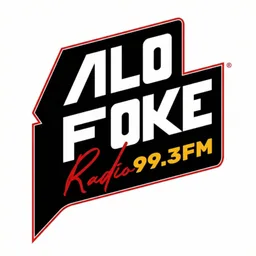
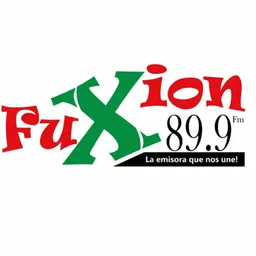
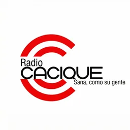

Hub · Género
Radios de urbano y reggaetón
94 emisoras en vivo en VivoRD
El urbano y el reggaetón dominicano tienen emisoras dedicadas, no solo bloques nocturnos en parrillas tropicales. Dembow, trap latino y estrenos de chart conviven en frecuencias orientadas a público joven de Santo Domingo, Santiago y ciudades turísticas. Detectamos este género cuando el nombre o la descripción de la emisora mencionan reggaetón, urbano, dembow, trap u otros términos equivalentes.
La clasificación se basa en texto real del catálogo VivoRD, no en suposiciones de formato. Una emisora generalista que no declare esos estilos no entrará aquí aunque ocasionalmente los toque. El listado mezcla señales nacionales e regionales siempre que el stream esté saludable.
Desde el extranjero, estas emisoras son ventana a estrenos y a la conversación cultural urbana del país. Cada tarjeta abre una ficha con reproductor integrado y descripción editorial enriquecida en el build.
Consulta la guía de radio urbana enlazada para contexto adicional y combina este hub con hubs de ciudad si quieres filtrar por zona. El dembow y el reggaetón evolucionan rápido; el catálogo se regenera cuando actualizamos datos.
Si una emisora deja de responder en nuestras comprobaciones, desaparece temporalmente del hub hasta que el titular restablezca el stream; así evitamos enlaces muertos en medio de una sesión de escucha.
Emisoras







